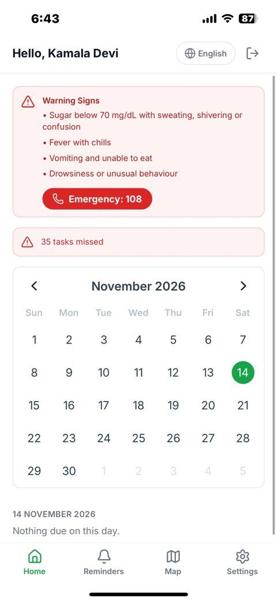
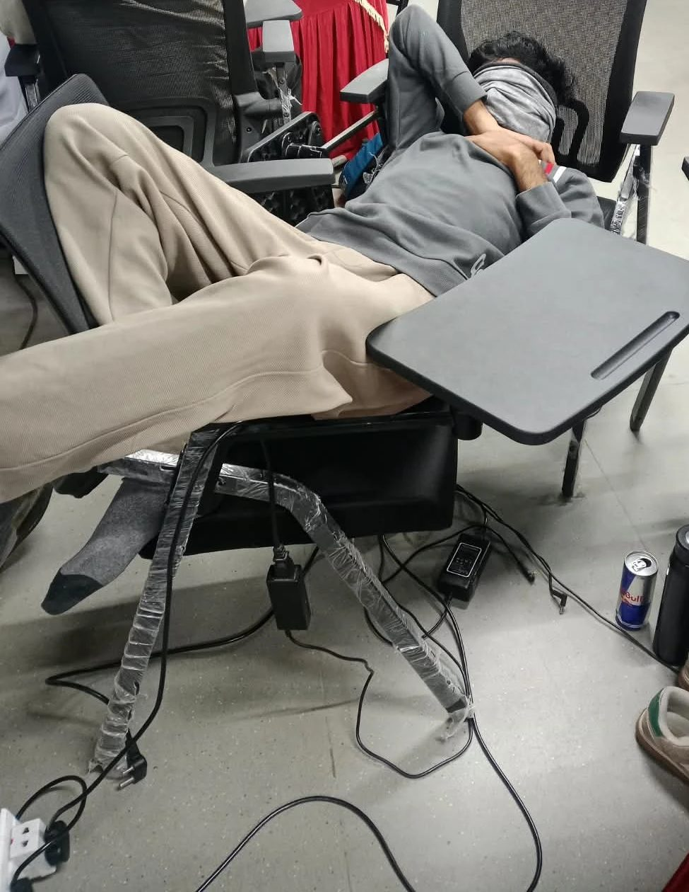
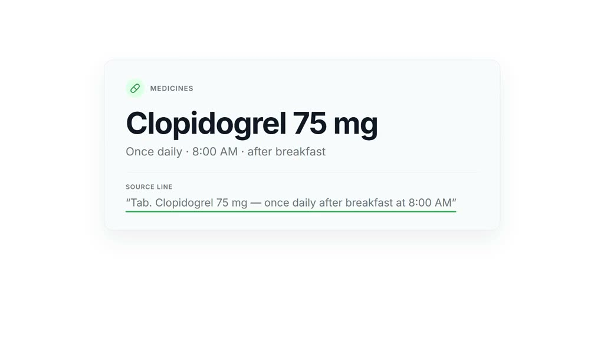

Main Page
Welcome to Carepedia,
the free encyclopedia of one hospital follow-up app, CareBridge.
12 articles in English · written by one developer · no login needed
From today's featured article

CareBridge is a hospital discharge follow-up app. It turns a patient's discharge summary into a doctor-approved, day-by-day plan of medicines, tests, appointments and warning signs, and reminds the patient and their family in English, Tamil or Hindi. The idea began at the Build to Care hackathon in October 2026, where its team of five finished runner-up without a working demo. In the month that followed, its developer built one: a mobile app, a hospital admin console and the service behind them. Its guiding rule is "AI reads, rules decide, a doctor approves" (Full article…)
Recently featured: How it works – Languages – Reliability
Did you know…

- … that CareBridge never sends a drug name or dose through an AI translator?
- … that a doctor must approve every plan before a single reminder reaches a patient?
- … that the first family member to join a patient's care becomes the Hub Manager?
- … that a plan left waiting 12 hours for a doctor is flagged as overdue?
- … that the developer (pictured) was photographed asleep across two office chairs during the hackathon?
Featured mascots
The grandmother and the nurse greet patients on the language screen of the CareBridge app. With a seedling robot and the console's fox, they make up the app's four mascots. The nurse is also the face of this encyclopedia.
In the news
- 27 November 2026 – Carepedia goes live; a security plan for version 2 is written.
- 16 November 2026 – The project README and a LinkedIn carousel, "No demo. So I built one.", are prepared.
- 14 November 2026 – The mobile app moves to Expo SDK 58 with new mascot artwork.
- 14 November 2026 – The project is restored after its folder was accidentally deleted.
- 9 October 2026 – The team finishes runner-up at Build to Care.
Watch

▶ 25 sThe narrated CareBridge launch film, cut from the working app.